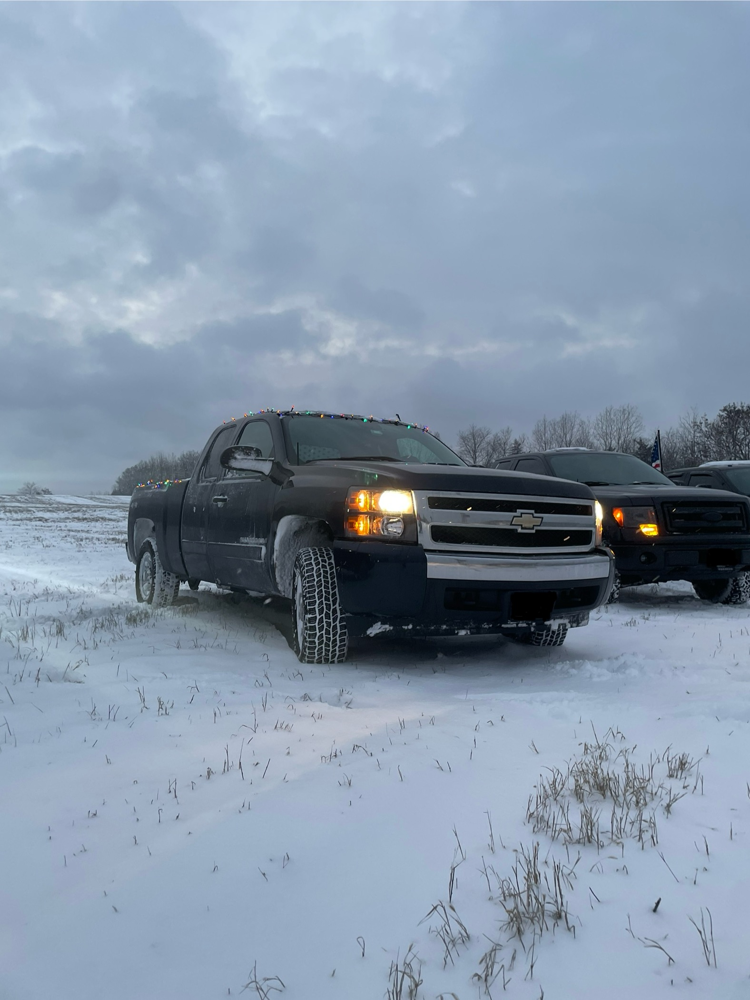
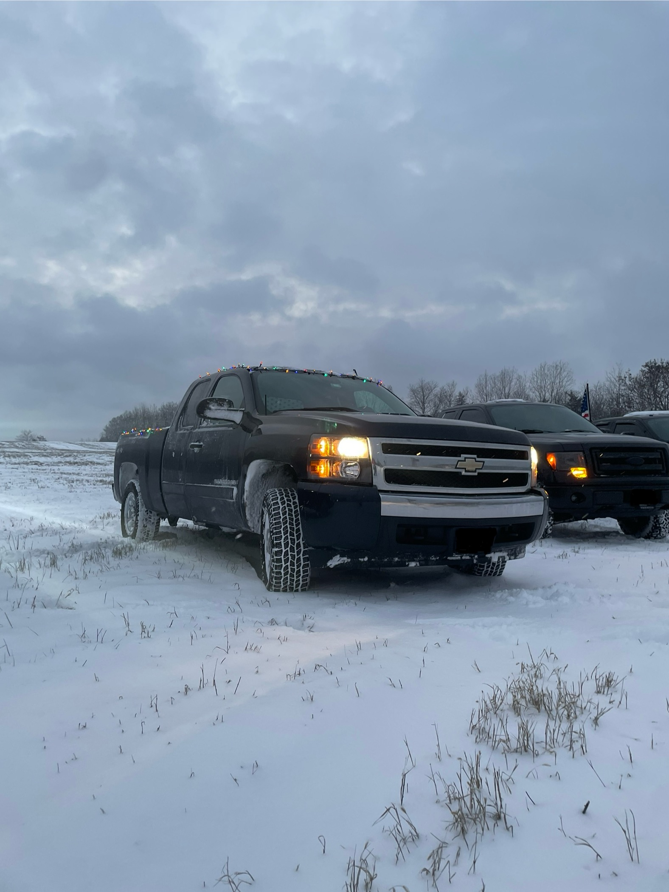

Hello, World!
My name is Michael DeVito. In my educational history, I was blessed with the opportunity to take dual-enrollment and dual-credit courses at my technical high school, and I graduated from Rowan College of South Jersey with an associate's degree in liberal arts before I even graduated high school. Now, I’m a student at Messiah University majoring in Cybersecurity and minoring in Web Development, and I'm on track to graduate in the Spring of 2027.
I currently work as a Team Leader at Chick-fil-A Shepherdstown Crossing, where I lead the night shift and organize the floor plan for the night. I also have some management responsibilities such as managing the safe and cash flow for the shift. This position has allowed me to grow in leadership and in service, as I lead my team to serve our community with excellence, efficiency, and accuracy.
Some of my hobbies include programming, kayaking, reading, collecting LEGO sets, and following Christian devotionals. I recently received my sacrament of Confirmation, officially becoming a member of Good Shepherd Anglican Church in Carlisle. I also love driving my truck, a 2008 Chevy Silverado, which I'm well-known for putting Christmas lights on for the Christmas season. Thank you for reading and getting to know a little bit more about me!